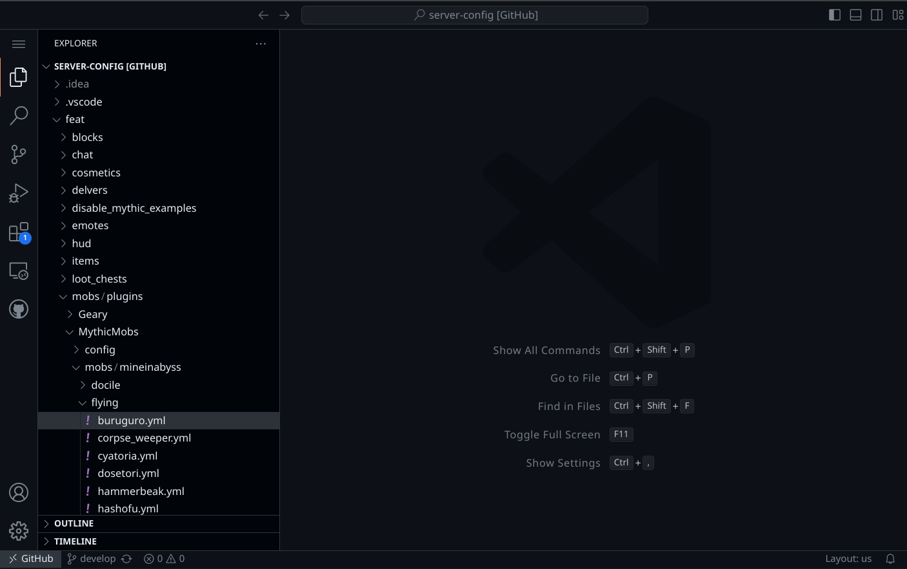
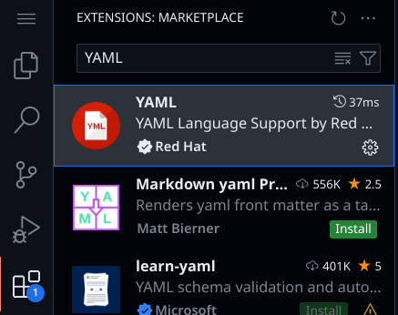
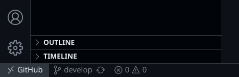
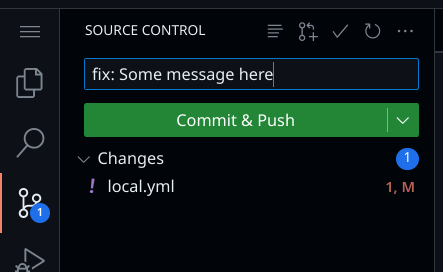
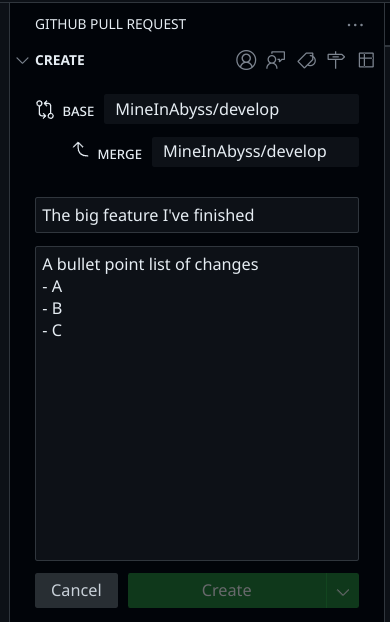

Introduction¶
Our server configs are publicly visible on GitHub here. This guide will explain the structure we use for our configs and how to edit them in your browser. Further pages will explain the syntax for different plugins we use.
Editing configs on the web¶
GitHub has a web editor built in which makes editing configs much easier. Create a GitHub account and sign in.
Next, visit the server config page and press . to open the editor:

Example showing the GitHub web editor

Download the YAML extension from the left sidebar to get helpful code completion for the config files!
File structure¶
Most server configs are stored in the feat folder, these are split into separate features which different servers can choose to include, as defined in keepup/configs.yml. This means multiple features can dynamically put configs into the same folders, for example feat/mobs defines MythicMobs config files, but so does feat/pets, on startup both will have their configs combined the same folder.
Uploading your changes¶

On the bottom left of your editor, you'll see the current branch you're working on, in this case develop.
You may click on it to create your own branch to work on changes (GitHub will ask if you want to "fork" this repo because you don't have permission to push to it directly, click yes and a copy will be made on your account).
Whenever you start working on something, we recommend swapping back to the develop branch, clicking the sync icon next to it to get the latest changes, and then creating a new branch for your work, ex. fix-mob-spawning.
The changes you make in your browser aren't automatically uploaded. To do so you need to "commit" them. Click on the source control button to the left and type a meaningful message describing what you changed.

Click Commit & Push to upload the changes to your branch.
Getting your changes on the server¶
You can make as many commits as you like, just try to keep messages meaningful. Once you're done, you can click the icon near the top of the previous image to create a "Pull request".

Enter a title and description and choose what "base" branch you're requesting to place your changes into, this should almost always be MineInAbyss/develop
After making a pull request, you'll be able to see it back on the server config GitHub page, someone will review it and potentially leave comments, and you can continue to commit to the branch the request was made on to update the PR. Eventually it will get "merged" into the develop branch and your changes will be live on the development server, ready for the next major update.